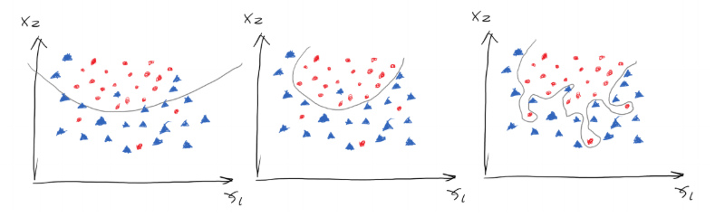
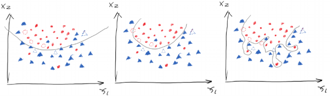
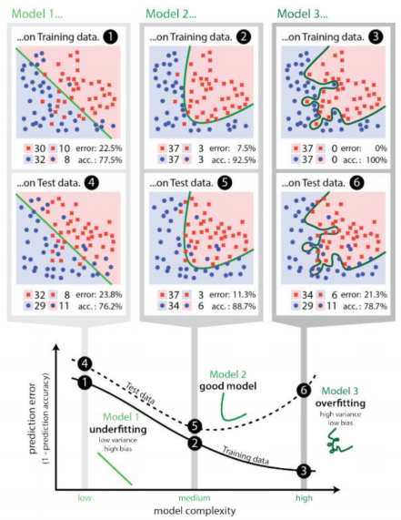

Chapter 11 – Underfitting and Overfitting¶
Ok, suppose we have trained a set of weights based on certain dataset, then we change the learning rate and number of iterations, and then train the neural network again. Here we would arrive at a different set of weights. Which set of weight is better? This is a realistic problem. A simple answer would be, why not just choose the model that yields the lowest cost? Let’s look at the following figure.
Suppose we have a curve that separates the two groups, and we have three ways of separating them as shown in figure 1.21. Which one out of the three is the best? The first model generally draws the boundary but not clear enough, therefore its cost must be high. The second model has lower cost then the first one but its not perfect as in some dots are wrongly-categorised. The third one on the right hand side should be perfect because it correctly separates the two groups completely. Thus, the cost of the third model should be the minimum. However, does that mean the third model is the best?
Based on statistics, most data should be good data but some are noises. Those noises can be outliers due to the invisible variables in the dataset. For example, we all think that a student who has \(GPA=4.0\) and \(SAT=2400\) should be accepted by a good university. However, if the scores are fake or he cheated on the exams, or the student had criminal records, then he would of course be rejected. In this case, the model that has only two variables (\(SAT\) and \(GPA\)) would not correctly predict the admission results. Again, this is the consequence of the invisible variables.
If we can have additional variables for the scenarios we mentioned before in the example, then we would not have noises or outliers. However, we cannot obtain all variables in reality. For example, the admission officer was drunk the day he reviewed the student’s profile and mistook his \(4.0 GPA\) as \(2.0 GPA\), and then he rejected this student. If we can obtain the variable of how drunk he was, then we can somehow predict how reliable his decision and take this into account in the model. Obviously, we cannot obtain the variable in real life. For some data points, therefore, it is reasonable to be wrongly-categorised. So the second model that has some outliers might actually be better than the third model that has the minimum cost.
But here is the problem. How do we know if the outlier we saw is actually an outlier due to invisible variable or if it is just a noise. One obvious method would be finding 100 students with \(GPA=4.0\) and \(SAT=2400\) and check if most of them got accepted by a university. If so, then the one student who has the same profile but got rejected would be an outlier. If not, then the student is not an outlier, maybe that university does not like students with perfect scores.
To generalise this method, although we are unlikely to find the same data like the 100 students and then observe the result, yet we are not about to predict if (\(4.0\) and \(2400\)) can be accepted but rather all combinations of scores. In a sense, we can use a testing dataset (that the AI model has never seen before, i.e. 2,000 students) to test how accurate the AI model is trained based on the training dataset (i.e. 8,000 students), if we have 10,000 students in total.
In the three plots in the figure1.22, the dashed dots are the data from the testing set. The first model has high cost as we mentioned before, but it got 5 out of 6 testing data right, so its accuracy is \(\frac{5}{6}\) (low error). The second model has medium cost, but it got all 6 testing data right, therefore scoring an accuracy of \(\frac{6}{6}\) (zero error). However, for the third model, though it had the lowest cost yet it got only 4 out of 6 data from the testing set right, receiving an accuracy of \(\frac{4}{6}\) (high error). Notice that we use the term lost or cost to measure the performance of the training set and the term error for testing set.
This is like me who has done a lot of past papers. I did not understand the principles behind the problems but simply remember all the answers. So if I do the past paper (training set) again, then I would receive crazily high scores. However, if I were to be tested by a new paper with new problems (testing set), then I would fail so hard. On the contrary, if a student is very smart, let’s call him Elon, if Elon understands the principles behind the questions then he still would not be scoring a perfect mark in the training set compared to me, yet he would be performing much better at the testing set. Obviously, we want Elon.
In AI, we regard the UCL students who did terrible in past papers and new exams (high cost in training set, low accuracy in testing set) as \(underfit\) \(models\). For the type of students, like me, who study hard and did well in past papers but fail super hard in new papers (low lost in training set but low accuracy in the testing set), we are called the \(overfit\) \(models\). For the type of students like Elon, he scores high in the past papers and new papers, so he is the model that we consider as the best. Obviously, we want Elon.